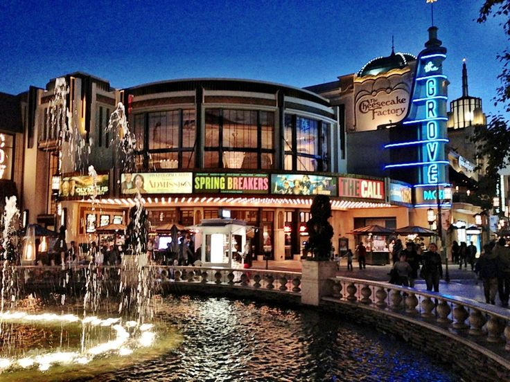

My name is Nazario C!
Major
I am majoring in Cognitive and Brain Science. I do plan on double minoring in Finance and Computer Science!
IP Address
Shhh … this is my IP Address: 10.247.20.198
Hometown
I grew up in the Los Angeles County, city of Angels! I'd prefer not to get specific where but it is a pretty lively spot!
Favorite Place
Check out this amazing scenary!
 While the Grove may not boast an abundance of stores or a myriad of activities, its beauty is undeniable, making it an ideal location for a leisurely walk or a delightful ice cream treat. Additionally, there is a movie theater for those inclined to catch a film. In my personal experience, I opt to explore a different restaurant during each visit.
Favorite Restaurant
Check out my favorite place to eat!
ilovemole
Something no one would expect from You
I do enjoy watching rom-coms!